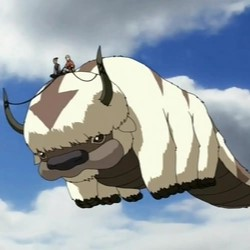
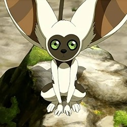
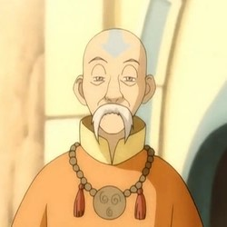
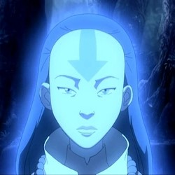
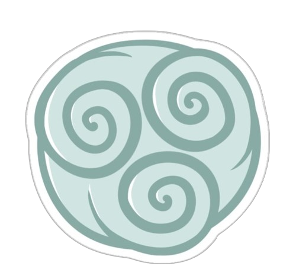

Characters 
Avatar Aang
Aang was een Luchtnomad geboren in 12 BG en de Avatar tijdens de
Honderdjarige Oorlog , als opvolger van Avatar Roku en
voorafgaand aan Avatar Korra . Als avatar van zijn tijd was hij
de enige persoon die alle vier de buigkunsten kon gebruiken :
luchtsturen , watersturen , aardesturen en vuursturen . Hij was
ook een van de weinige Avatars en een van de eersten in vele
cycli die de eeuwenoude kunst van het energiesturen leerde , en
tevens de eerste Avatar waarvan bekend is dat hij deze techniek
actief heeft gebruikt.
Kort voor het begin van de Honderdjarige Oorlog zat Aang honderd
jaar lang bevroren in een ijsberg; Later kwam hij, biologisch
gezien nog steeds twaalf jaar oud, terecht in een wereld die
werd overspoeld door oorlog. Tijdens zijn afwezigheid had de
Vuurnatie oorlog gevoerd tegen de andere naties en slaagde erin
de pacifistische Luchtnomaden volledig uit te roeien . Het was
aan Aang, de Avatar en de laatste luchtstuurder, om de oorlog te
beëindigen door de andere drie elementen onder de knie te
krijgen en Vuurheer Ozai te verslaan . Hij bleef in zijn hart
een aardig en maf kind gedurende zijn jarenlange strijd, ondanks
het overweldigende verlies van zijn volk en de zware lasten die
hij moest dragen. Na zijn overwinning op de Phoenix King begon
Aang een romantische relatie met zijn goede vriend Katara . Het
echtpaar trouwde uiteindelijk en kreeg een gezin met drie
kinderen: Bumi , de oudste, een niet-stuurder die later in zijn
leven luchtstuurder werd; Kya , een waterstuurder; en de
jongste, Tenzin , een luchtstuurder.
- Aang
- Nationaliteit: De Luchtnomaden
- Geslacht: Man
- Kleur haar: Zwart (normaal kaal)
- Kleur ogen: Grijs
- Leeftijd: 12 (112 na meetellen van tijd in ijs)
- Eerste verschijning: De jongen in de IJsberg
- Wapen(s): Staf
- Sturing(en): Lucht, Water, Aarde, Vuur
Appa
Appa was de trouwe luchtbizon van Avatar Aang , die een sterke
band met hem en Momo deelde , aangezien ze allemaal enkele van
de weinige overgebleven sporen waren van de Air Nomad-
beschaving. Appa stond vooral bekend om zijn vermogen om te
vliegen ondanks zijn zware gewicht, een prestatie die werd
bereikt door middel van luchtsturen , waardoor hij het
belangrijkste transportmiddel werd dat door Team Avatar werd
gebruikt .
Toen Appa nog een jong kalf was dat rond de Eastern Air Temple
woonde , mochten jonge luchtstuurders hun toekomstige
metgezellen ontmoeten, die zich voor het leven met hen zouden
verbinden. De moeder van de kudde stuurde haar kalveren gewillig
naar de jonge monniken. Aang kwam naar voren en bood Appa een
appel aan, en de twee werden vrijwel onmiddellijk daarna beste
vrienden.
- Aang
- Nationaliteit: De Luchtnomaden
- Geslacht: Man
- Kleur haar: Wit met bruin
- Kleur ogen: Bruin
- Leeftijd: 7 (107 na meetellen van tijd in ijs)
- Eerste verschijning: De jongen in de IJsberg
- Sturing(en): Luchtsturen

Momo
Momo was een gevleugelde maki en een trouwe metgezel van Avatar
Aang en zijn vrienden . Tegen het einde van 99 woonde hij in de
Zuidelijke Luchttempel en was het enige bekende exemplaar van de
gevleugelde makisoort dat nog leefde na de Luchtnomadengenocide
.
Tijdens een bezoek aan de Zuidelijke Luchttempel eind 99 AG
hoorden Avatar Aang, Katara en Sokka een vreemd geluid uit de
deuropening van het heiligdom van de tempel , wat erop duidde
dat iemand de kamer was binnengekomen. [3] Bang dat het een
vuurstuurder was , verstopten ze zich achter twee
Avatar-beelden, maar ontdekten dat de indringer slechts een maki
was. Aang toonde belangstelling voor hem en verlangde ernaar hem
als zijn nieuwe huisdier te adopteren.
- Momo
- Nationaliteit: De Luchtnomaden
- Geslacht: Man
- Kleur haar: Wit met bruin
- Kleur ogen: Bruin en Groen
- Leeftijd: Onbekend
- Eerste verschijning: De Zuidelijke Luchttempel
- Sturing(en): Luchtsturen

Monk Gyatso
Monnik Gyatso was Avatar Aang 's voogd, mentor en vaderfiguur
vóór het begin van de Honderdjarige Oorlog , en tevens lid van
de Raad van Ouderen . Volgens Aang was hij in zijn tijd de
grootste luchtstuurder ter wereld.
Gyatso stond bekend om zijn vriendelijkheid en gevoel voor
humor. Hoewel Aang onder hem het luchtsturen leerde als
onderdeel van zijn Avatar-training, maakte de monnik altijd tijd
voor plezier en spelletjes , zoals Pai Sho . In zijn vroege
jaren had Gyatso ook een sterke vriendschap met Aangs vorige
incarnatie, Roku .
- Gyatso
- Nationaliteit: De Luchtnomaden
- Geslacht: Man
- Kleur haar: Zwart (normaal kaal)
- Kleur ogen: Grijs
- Leeftijd: Ongeveer 80 jaar
- Eerste verschijning: De Zuidelijke Luchttempel
- Sturing(en): Lucht

Avatar Yangchen
Yangchen was de Luchtnomadenavatar als opvolger van Avatar Szeto
en voorafgaand aan Avatar Kuruk . Ze groeide op in een nogal
isolationistische tijd voor de vier naties in de nasleep van de
Platinum-affaire . Nadat ze in haar jeugd alle elementen onder
de knie had, wilde ze ondanks haar onervarenheid graag een
verschil maken in de wereld . Na haar confrontatie met generaal
Old Iron in Tienhaishi besloot Yangchen zich aan te passen aan
de complexe politieke strategie van de vier naties, waarbij ze
manipulatie, spionage en bedrog in haar voordeel gebruikte in
een tijdperk waarin loyaliteit werd gekocht in plaats van
verdiend.
Tijdens een officieel bezoek aan de Shang- steden probeerde
Yangchen de grote kloof tussen arm en rijk in Bin-Er te
verkleinen . Ze werkte achter de schermen om een einde te
maken aan de obscene hoeveelheid corruptie en werkte samen met
haar nieuwe metgezel, Kavik , om het Unanimity-project te
onderzoeken , dat tot doel had de macht in handen van de Shangs
te leggen. Na het verslaan van drie verbrandingsstuurders die
fungeerden als menselijke wapens en het arresteren van Zongdu
Henshe , verdoezelde Yangchen de crisis als een incident met
betrekking tot spirituele onevenwichtigheid, en verzocht hij met
succes een verzoekschrift aan Aardekoning Feishan om het bestuur
van Bin-Er te krijgen.
- Yangchen
- Nationaliteit: De Luchtnomaden
- Geslacht: Vrouw
- Kleur haar: Bruin
- Kleur ogen: Bruin
- Leeftijd: Ongeveer 80 jaar
- Eerste verschijning: De Avatar-staat
- Sturing(en): Lucht, Water, Vuur en Aarde

Element Wind

Luchtsturen
Luchtsturen , een van de vier elementaire buigkunsten , is het
aerokinetische vermogen om lucht te controleren en te
manipuleren. De vreedzame Luchtnomaden gebruikten dit soort
buigingen in hun dagelijks leven.
Lucht is het element van vrijheid. [1] De Luchtnomaden maakten
zich los van wereldse problemen en zorgen; het vinden van vrede
en vrijheid was de sleutel tot het oplossen van hun
moeilijkheden in het leven. Luchtstuurders zochten voortdurend
naar spirituele verlichting, en als gevolg daarvan waren alle
kinderen die in de Luchtnomaden werden geboren, buigers. De
eerste luchtstuurders leerden hun kunst van de vliegende bizons
.
De sleutel tot luchtsturen is flexibiliteit en het vinden en
volgen van het pad van de minste weerstand. Luchtsturen valt op
omdat het bijna puur defensief is, en ook de meest dynamische
van de vier buigkunsten. Luchtstuurders kunnen veel
tegenstanders tegelijk overweldigen met grote en krachtige
aanvallen die fataal kunnen zijn; Vanwege het pacifistische
karakter van de Air Nomads worden dergelijke aanvallen echter
zelden gebruikt. In plaats daarvan probeert een luchtstuurder de
energie van de tegenstander tegen hen te gebruiken. [3] Vanwege
hun bovengenoemde spiritualiteit passen ze zich vaak aan de
situatie om hen heen aan en maken ze gebruik van negatieve jing
, waarbij ze de voorkeur geven aan ontwijkende manoeuvres boven
directe confrontatie.
Oorsprong
Tijdens het tijdperk van Raava werd de kracht van lucht
tijdelijk verleend aan de inwoners die op een gigantische
leeuwenschildpad leefden terwijl ze het dorp verlieten om
voedsel in te slaan. Nadat ze definitief de zorg van de
leeuwenschildpad hadden verlaten, leerden de voormalige bewoners
uiteindelijk het luchtsturen van de vliegende bizon, een heilig
wezen in de Air Nomad-cultuur. [2] De bizons gebruiken doorgaans
hun enorme beverachtige staart om windstoten te creëren en
kunnen, zoals de naam al doet vermoeden, vliegen zonder enig
zichtbaar voortstuwingsmiddel. [4] Er wordt ook gezegd dat de
luchtstuurders de pijlmarkering van de vliegende bizons leenden
voor het ontwerp van hun traditionele tatoeages . Deze
markeringen symboliseren iemands beheersing van de
luchtstuurkunst en worden aan een beoefenaar gegeven zodra zijn
training is voltooid. In tegenstelling tot andere landen werden
alle luchtnomaden geboren als luchtstuurders vanwege de sterke
banden van de cultuur met spiritualiteit. [5] [6] De enige
bekende uitzondering waren degenen die in een ander land waren
geboren en later in de Air Nomad-cultuur waren opgenomen.
De genocide van de luchtnomaden
In 0 AG waren de luchtstuurders het slachtoffer van genocide
door de Vuurnatie . De tempels werden binnengevallen en alle
luchtstuurmonniken werden afgeslacht in een poging de cyclus van
reïncarnatie van de Avatar te doorbreken en de overwinning van
de Vuurnatie in hun imperialistische oorlog veilig te stellen.
Een aantal luchtstuurders wist het aanvankelijke bloedbad te
overleven en vluchtte onder te duiken, maar werd later met
relikwieën van huis naar bergachtige gebieden gelokt en
vermoord.
Ironisch genoeg is de enige bekende overlevende van het bloedbad
dezelfde persoon die de Vuurnatie probeerde te vermoorden in
haar zoektocht naar suprematie: de twaalfjarige luchtstuurder en
Avatar, Aang, was kort voordat de oorlog in alle ernst begon van
huis weggelopen. raakte gevangen in een schijndood, bevroren in
een ijsberg nabij de Zuidpool.
Tot de laatst bekende overblijfselen van de luchtstuurcultuur
behoorden een overlevende vliegende bizon, Appa, en een
gevleugelde maki , Momo , die beiden Aangs metgezellen waren. De
verlaten Noordelijke Luchttempel werd gekoloniseerd door
ontheemde burgers van het Aarderijk , geleid door de monteur.
[79] De oostelijke luchttempel werd bewoond door Guru Pathik ,
die beweerde een oude vriend van monnik Gyatso te zijn. [38] De
Zuidelijke Luchttempel is de enige tempel waarin de lichamen van
talloze Vuurnatie-soldaten en het lijk van monnik Gyatso
aanwezig zijn. Jaren later vond Aang een eiland vol gezonde
vliegende bizons en ringstaartmaki's , wat erop wees dat Appa
niet de laatste overlevende vliegende bizon was.